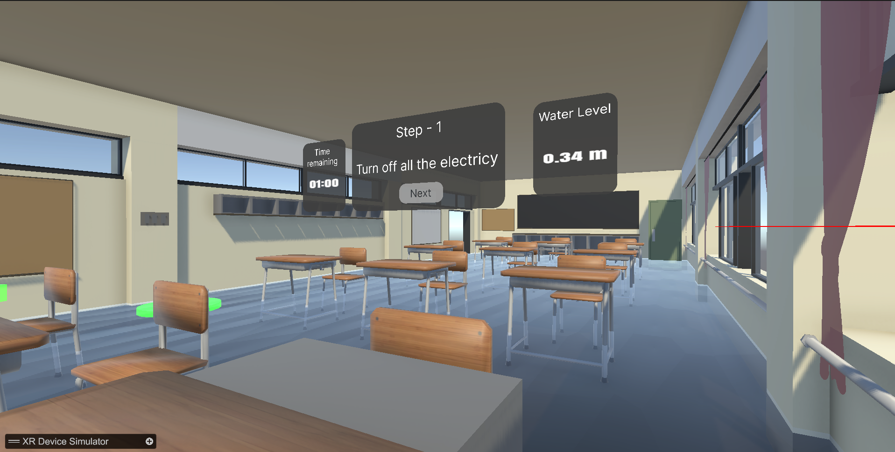
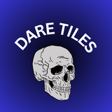
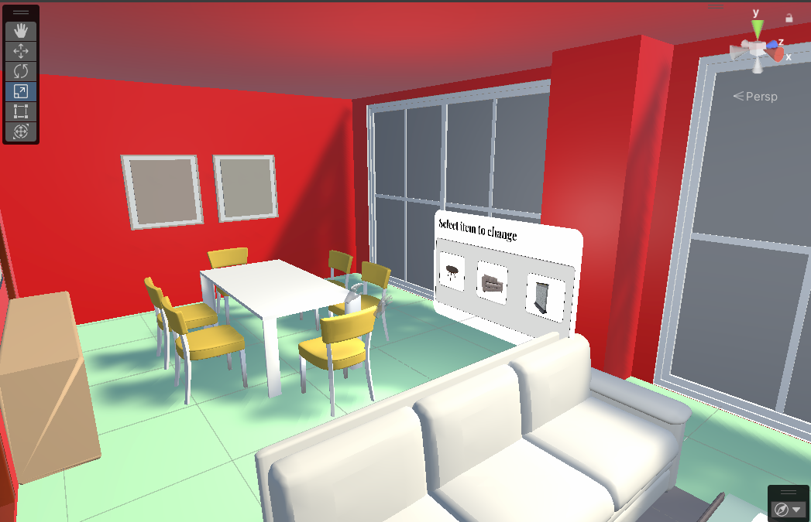

SELECTED WORK
things I've built ↓

Yes Chef
A fast-paced first-person cooking game built in Unity. Players prepare orders, pick up ingredients, chop food, interact with kitchen objects, and serve customers under time pressure.

VR Flood Simulation
An immersive VR disaster-management simulation where users experience a flooding scenario and interact with their surroundings to understand emergency situations.

Dare Tiles AR
An interactive AR game built with Unity where players interact with virtual tiles and complete challenges through an augmented environment.

VR Interior Designer
An interactive spatial design experience that allows users to visualize and arrange furniture and interior elements within a virtual or augmented environment.